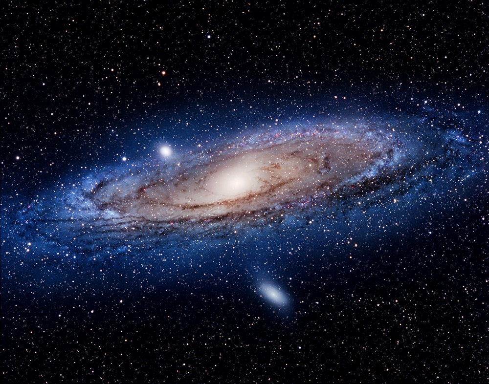

Galáxia de Andromeda
A galáxia de Andrômeda, também é chamada de Messier 31, está a 2,5 milhões de anos-luz da Terra e é a mais próxima da Via Láctea. Por isso, ela é estudada pelos cientistas há vários séculos.

A galáxia de Andrômeda, também é chamada de Messier 31, está a 2,5 milhões de anos-luz da Terra e é a mais próxima da Via Láctea. Por isso, ela é estudada pelos cientistas há vários séculos.